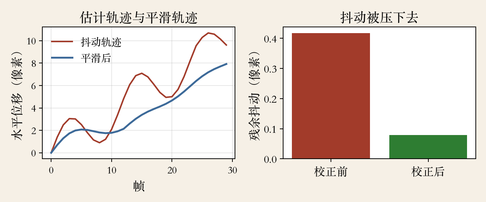
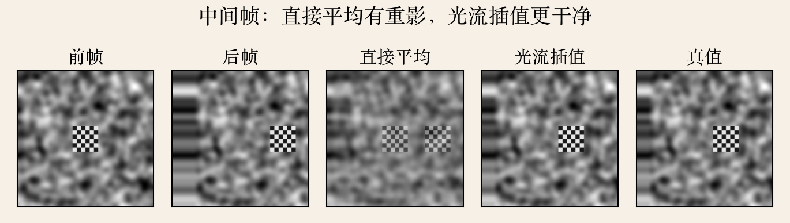
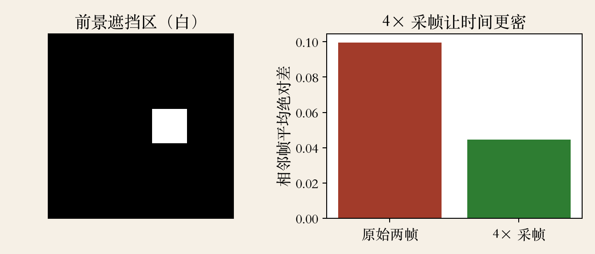

开场 · 运动估计的三件产品
运动估计能做三件事
防抖：把抖动的相机轨迹拉直。
插帧：在两张图之间造一张。
慢动作：把中间帧按时间铺开。
三件事都靠同一个信息：谁去哪了。
依据：原书第 573–575、593–594 页
共同点
运动估得准，画面稳、顺
估不准就抖、糊、重影
本集先防抖，再插帧
正课第八十集
01 / 16
原书第 573 页 · 防抖
防抖：把已经拍抖的画面摆稳
视频防抖是参数运动估计最广泛的应用之一。
算法既跑在摄像机、相机硬件里，也跑在软件包里。
防抖用运动信息把画面重新摆稳。
它便宜通用，但边界和遮挡躲不掉。
依据：原书第 573 页
两个落点
硬件：相机、摄像机
软件：后期提升画质
代价：边界与遮挡
正课第八十集
02 / 16
原书第 574 页 · 三阶段
三阶段：估运动、平滑、重采样
先估每帧相对参考的相机运动。
再把高频抖动去掉，留下低频摇镜。
最后按修正量把每帧重采样回去。
三步里最难的是第一步，估错后面越平滑越错。
依据：原书第 574 页
顺序
估：量出怎么抖
平：画理想轨迹
重采样：把每帧挪过去
正课第八十集
03 / 16
原书第 574 页 · 锁背景
锁背景，别被前景带偏
运动估计常用相似变换。
相似变换处理相机平移、旋转和缩放。
难点是锁住背景运动。
前景一大、纹理一强，全局估计会被拽走。
依据：原书第 574 页
工程做法
先分前景和背景
或用鲁棒估计压外点
和 RANSAC 是同一类思路
正课第八十集
04 / 16
原书第 574 页 · 平滑
平滑：低频留，高频删
保留低频的慢变运动。
估计并去掉高频抖动。
常用二次惩罚。
想锁定或匀速，可用 L1 最小化导数。
依据：原书第 574 页
L2 与 L1
二次像橡皮筋，抖得远拉得狠
L1 允许少数大修正
要顺还是要直
正课第八十集
05 / 16
原书第 574–575 页 · 代价
代价：边界、模糊、三维重建
重采样会带来边界缺失。
可以裁剪、用其他帧补，或者 inpaint。
快速运动还会让帧模糊。
相机大幅平移时，用完整运动恢复结构重渲染三维路径。
依据：原书第 574–575 页
两条路
二维：掰画面，便宜
三维：换相机路径，更贵
三维不会把画面掰到没边
正课第八十集
06 / 16
防抖实验 · 合成序列
实测：抖动压五倍，裁掉一成八
合成一段边走边抖的序列。
全局平移估计平均误差 0.052 像素。
因果移动平均后，残余抖动 0.417 降到 0.079 像素。
原图 128 像素见方，每边裁 6 像素，面积只剩八成二。
依据：本集实验
读数
抖动压了五倍多
裁剪损失约一成八
只演示平移
正课第八十集
07 / 16
防抖实验 · 程序生成示意图
看图：抖的轨迹与平滑的轨迹
红线是估计出的抖动轨迹。
蓝线是平滑后的轨迹，只保留慢变趋势。
校正后抖动从 0.417 掉到 0.079。
蓝线结尾略滞后，这是因果平滑的代价。
依据：本集实验

防抖：估计轨迹、平滑轨迹与校正前后残余抖动｜程序生成，未用教材或论文原图
正课第八十集
08 / 16
原书第 593 页 · 插帧
插帧：匹配刷新率，还要判遮挡
帧插值把输入视频匹配到显示器刷新率。
在前后帧之间造新帧。
每个未知像素都需要准确运动。
光有运动不够，遮挡信息同样关键。
依据：原书第 593 页
两件事
运动：像素从哪来
遮挡：中间时刻该露谁
少了遮挡，前景会污染背景
正课第八十集
09 / 16
原书第 593 页 · 一致性与混合
一致就混，不一致先判可见
同一个运动在前后帧都对得上，叫光流一致。
搬到中间时刻，颜色按线性插值混合。
运动不一致时，要判断哪个对、哪个被遮挡。
一致的地方直接混，不一致先判 visibility。
依据：原书第 593 页
(1−t) I0(x0) + t I1(x0+u0)
t：中间时刻；I0、I1：前后帧；u0：运动
正课第八十集
10 / 16
插帧实验 · 合成场景
实测：重影和干净差多少
相机横移 20 像素，前景棋盘再移 20 像素。
直接平均的 PSNR 只有 14.6 分贝。
光流插值到 99 分贝。
只看遮挡区，直接平均 6.2 分贝，光流插值仍是 99。
依据：本集实验
读数
全图：14.6 对 99
遮挡区：6.2 对 99
合成数据运动精确已知
正课第八十集
11 / 16
插帧实验 · 程序生成示意图
看图：两个重影变成一个
从左到右：前帧、后帧、直接平均、光流插值、真值。
直接平均里有两个棋盘重影。
光流插值把前景搬到中间，只剩一个。
先看前景边缘和遮挡边界，那里最容易穿帮。
依据：本集实验

中间帧对照：前帧、后帧、直接平均、光流插值、真值｜程序生成，未用教材或论文原图
正课第八十集
12 / 16
原书第 593–594 页 · 深度插帧
深度插帧：估流、判可见、合成一起学
更近的插帧用深度网络。
有的用时空卷积，有的算双向光流。
再用上下文特征或软可见性图合并两帧。
Niklaus 和 Liu 的系统用 softmax splatting 合并，解码网络合成。
依据：原书第 593–594 页
流程
多分辨率深度特征
双向光流前向 warp
软可见性合并与解码
正课第八十集
13 / 16
慢动作 · 4× 采帧
慢动作：中间帧越准越顺
在四分之一、二分之一、四分之三时刻各补一帧。
帧率变成四倍。
模糊后的相邻帧平均绝对差 0.0995 降到 0.0446。
中间帧有重影，慢放会把重影也放慢。
依据：本集实验

遮挡区与 4× 采帧前后相邻帧差（高斯模糊 σ=4）｜程序生成，未用教材或论文原图
正课第八十集
14 / 16
应用工程 · 本集归纳
取舍表：三件事各有代价
防抖要裁边界。
插帧要判遮挡。
慢动作要中间帧准。
三者都怕快速运动、无纹理、光照突变和卷帘快门。
依据：本集实验
先问四件事
离线还是在线
能不能接受裁剪
有没有深度和 IMU
下游是显示、剪辑还是测量
正课第八十集
15 / 16
收束 · 下一集实验课
收束：三件事，一条线
防抖 = 估运动 + 平滑轨迹 + 重采样。
插帧 = 逐像素运动 + 遮挡 + 线性混合。
慢动作 = 插帧的时间版。
下一集：画光流场，手写 Lucas–Kanade 求解器。
依据：本集实验
下一集
光流场可视化
手写 Lucas–Kanade 求解器
看窗口、梯度、迭代
正课第八十集
16 / 16